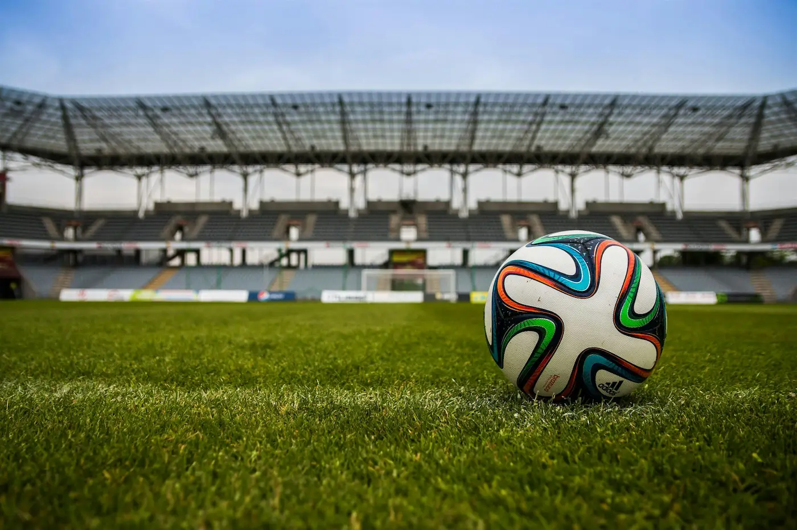
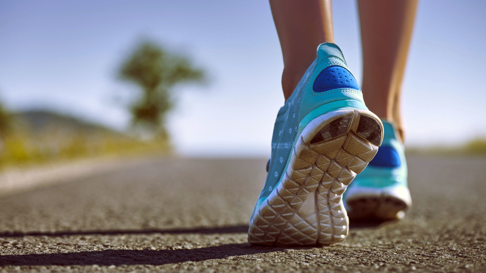

Hobbies
These are some of my personal hobbies and things I like to do during my free time.
-
Playing Video Games

I enjoy playing videogames, mostly mobile games. Some of the games that I play are Clash Royale, Brawl Stars and Roblox. I also play on Playstation with games like FIFA, Fortnite and Minecraft.
-
Playing Soccer

I also play soccer. It is my favorite sport. It serves as a good excerise. I like to play in the midfield and give passes, but when I am not in the midfield I like to be the goalkeeper and save shots. I play with my cousins at the park most weekends and enjoy myself there.
-
Watching Sports

I enjoy watching sports. I watch soccer teams play on TV, I watch the UEFA Champions League, Premier League, and Spanish La Liga games. My favorite soccer team to watch is FC Barcelona. I also watch highlights from other soccer teams.
-
Going for Runs

I enjoy going for runs. I feel like it is a great way to workout, no equipment is required. I make runs all around my neighborhood and try to visit new areas. Running helps me clear my mind and de-stress.